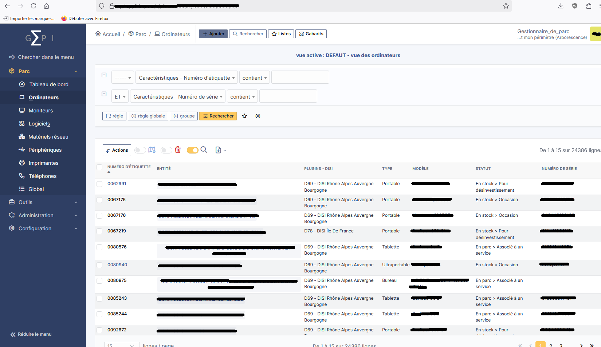

Mission 2 — Gestion du parc informatique avec Sigma
Cette mission consistait à consulter et analyser les informations relatives aux équipements informatiques à l’aide de l’outil de gestion de parc Sigma.
Contexte
Dans une organisation, il est essentiel de disposer d’un suivi précis du parc informatique afin de faciliter la maintenance, la gestion du matériel et l’attribution des équipements aux utilisateurs.
Pour cela, l’établissement utilise l’outil Sigma, qui permet de centraliser les informations concernant les postes informatiques, les utilisateurs et le matériel.
Objectif
L’objectif de cette mission était de consulter et analyser les informations concernant les équipements informatiques afin d’assurer un suivi fiable du parc informatique.
Activités réalisées
Dans un premier temps, j’ai consulté les fiches équipements dans l’outil Sigma. Ces fiches permettent d’accéder à différentes informations sur les postes informatiques comme leur nom, leur identification ou encore leur affectation.
J’ai ensuite procédé à la vérification des informations des postes afin de m’assurer que les données enregistrées dans l’outil correspondaient bien à la réalité du parc informatique.
J’ai également participé au suivi de l’inventaire du matériel, ce qui permet d’avoir une vision claire des équipements disponibles et de ceux déjà attribués aux utilisateurs.
Enfin, j’ai pu identifier les équipements attribués aux utilisateurs, ce qui facilite la gestion du matériel et le suivi des ressources informatiques dans l’organisation.
Résultat
L’utilisation de l’outil Sigma permet d’assurer un suivi précis et structuré du parc informatique. Les informations concernant les équipements sont centralisées, ce qui facilite leur gestion et leur maintenance.
Preuve
Exemple d’une fiche équipement consultée dans l’outil Sigma :

Cliquez sur l’image pour l’agrandir.